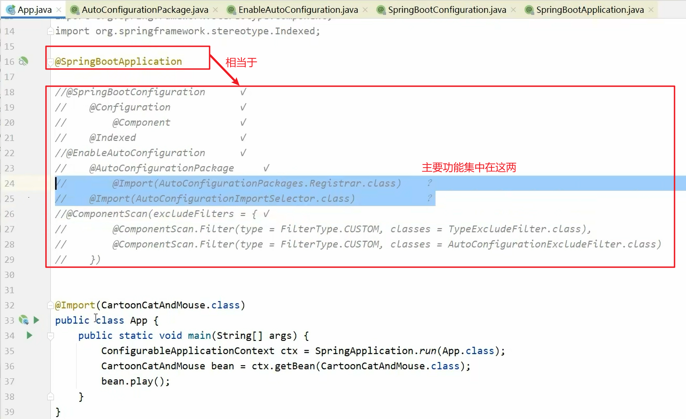

SpringBoot原理篇
1. 自动配置工作流程
1.1 bean的加载方式
关于bean的加载方式，spring提供了各种各样的形式。因为spring管理bean整体上来说就是由spring维护对象的生命周期，所以bean的加载可以从大的方面划分成2种形式。已知类并交给spring管理，和已知类名并交给spring管理。有什么区别？一个给.class，一个给类名字符串。内部其实都一样，都是通过spring的BeanDefinition对象初始化spring的bean。如果前面这句话看起来有障碍，可以去复习一下spring的相关知识。B站中有我尊敬的满一航老师录制的spring高级课程，链接地址如下，欢迎大家捧场，记得一键三连哦。
https://www.bilibili.com/video/BV1P44y1N7QG方式一：配置文件+<bean/>标签
最高端的食材往往只需要最简单的烹饪方法，搞错了，再来。最初级的bean的加载方式其实可以直击spring管控bean的核心思想，就是提供类名，然后spring就可以管理了。所以第一种方式就是给出bean的类名，至于内部嘛就是反射机制加载成class，然后，就没有然后了，拿到了class你就可以搞定一切了。如果这句话听不太懂，请这些小盆友转战java基础高级部分复习一下反射相关知识。
<?xml version="1.0" encoding="UTF-8"?>
<beans xmlns="http://www.springframework.org/schema/beans"
xmlns:xsi="http://www.w3.org/2001/XMLSchema-instance"
xsi:schemaLocation="http://www.springframework.org/schema/beans http://www.springframework.org/schema/beans/spring-beans.xsd">
<!--xml方式声明自己开发的bean-->
<bean id="cat" class="Cat"/>
<bean class="Dog"/>
<!--xml方式声明第三方开发的bean-->
<bean id="dataSource" class="com.alibaba.druid.pool.DruidDataSource"/>
<bean class="com.alibaba.druid.pool.DruidDataSource"/>
<bean class="com.alibaba.druid.pool.DruidDataSource"/>
</beans>方式二：配置文件扫描+注解定义bean
由于方式一种需要将spring管控的bean全部写在xml文件中，对于程序员来说非常不友好，所以就有了第二种方式。哪一个类要受到spring管控加载成bean，就在这个类的上面加一个注解，还可以顺带起一个bean的名字（id）。这里可以使用的注解有@Component以及三个衍生注解@Service、@Controller、@Repository。
@Component("tom")
public class Cat {
}@Service
public class Mouse {
} 当然，由于我们无法在第三方提供的技术源代码中去添加上述4个注解，因此当你需要加载第三方开发的bean的时候可以使用下列方式定义注解式的bean。@Bean定义在一个方法上方，当前方法的返回值就可以交给spring管控，记得这个方法所在的类一定要定义在@Component修饰的类中，有人会说不是@Configuration吗？建议把spring注解开发相关课程学习一下，就不会有这个疑问了。
@Component
public class DbConfig {
@Bean
public DruidDataSource dataSource(){
DruidDataSource ds = new DruidDataSource();
return ds;
}
} 上面提供的仅仅是bean的声明，spring并没有感知到这些东西，像极了上课积极回答问题的你，手举的非常高，可惜老师都没有往你的方向看上一眼。想让spring感知到这些积极的小伙伴，必须设置spring去检查这些类，看他们是否贴标签，想当积极分子。可以通过下列xml配置设置spring去检查哪些包，发现定了对应注解，就将对应的类纳入spring管控范围，声明成bean。
<?xml version="1.0" encoding="UTF-8"?>
<beans xmlns="http://www.springframework.org/schema/beans"
xmlns:context="http://www.springframework.org/schema/context"
xmlns:xsi="http://www.w3.org/2001/XMLSchema-instance"
xsi:schemaLocation="
http://www.springframework.org/schema/beans
http://www.springframework.org/schema/beans/spring-beans.xsd
http://www.springframework.org/schema/context
http://www.springframework.org/schema/context/spring-context.xsd
">
<!--指定扫描加载bean的位置-->
<context:component-scan base-package="com.itheima.bean,com.itheima.config"/>
</beans> 方式二声明bean的方式是目前企业中较为常见的bean的声明方式，但是也有缺点。方式一中，通过一个配置文件，你可以查阅当前spring环境中定义了多少个或者说多少种bean，但是方式二没有任何一个地方可以查阅整体信息，只有当程序运行起来才能感知到加载了多少个bean。
方式三：注解方式声明配置类
方式二已经完美的简化了bean的声明，以后再也不用写茫茫多的配置信息了。仔细观察xml配置文件，会发现这个文件中只剩了扫描包这句话，于是就有人提出，使用java类替换掉这种固定格式的配置，所以下面这种格式就出现了。严格意义上讲不能算全新的方式，但是由于此种开发形式是企业级开发中的主流形式，所以单独独立出来做成一种方式。嗯……，怎么说呢？方式二和方式三其实差别还是挺大的，番外篇找个时间再聊吧。
定义一个类并使用@ComponentScan替代原始xml配置中的包扫描这个动作，其实功能基本相同。为什么说基本，还是有差别的。先卖个关子吧，番外篇再聊。
@ComponentScan({"com.itheima.bean","com.itheima.config"})
public class SpringConfig3 {
@Bean
public DogFactoryBean dog(){
return new DogFactoryBean();
}
}使用FactroyBean接口
补充一个小知识，spring提供了一个接口FactoryBean，也可以用于声明bean，只不过实现了FactoryBean接口的类造出来的对象不是当前类的对象，而是FactoryBean接口泛型指定类型的对象。如下列，造出来的bean并不是DogFactoryBean，而是Dog。有什么用呢？可以在对象初始化前做一些事情，下例中的注释位置就是让你自己去扩展要做的其他事情的。
public class DogFactoryBean implements FactoryBean<Dog> {
@Override
public Dog getObject() throws Exception {
Dog d = new Dog();
//.........
return d;
}
@Override
public Class<?> getObjectType() {
return Dog.class;
}
@Override
public boolean isSingleton() {
return true;
}
} 有人说，注释中的代码写入Dog的构造方法不就行了吗？干嘛这么费劲转一圈，还写个类，还要实现接口，多麻烦啊。还真不一样，你可以理解为Dog是一个抽象后剥离的特别干净的模型，但是实际使用的时候必须进行一系列的初始化动作。只不过根据情况不同，初始化动作不同而已。如果写入Dog，或许初始化动作A当前并不能满足你的需要，这个时候你就要做一个DogB的方案了。然后，就没有然后了，你就要做两个Dog类。当时使用FactoryBean接口就可以完美解决这个问题。
通常实现了FactoryBean接口的类使用@Bean的形式进行加载，当然你也可以使用@Component去声明DogFactoryBean，只要被扫描加载到即可，但是这种格式加载总觉得怪怪的，指向性不是很明确。
@ComponentScan({"com.itheima.bean","com.itheima.config"})
public class SpringConfig3 {
@Bean
public DogFactoryBean dog(){
return new DogFactoryBean();
}
}注解格式导入XML格式配置的bean
再补充一个小知识，由于早起开发的系统大部分都是采用xml的形式配置bean，现在的企业级开发基本上不用这种模式了。但是如果你特别幸运，需要基于之前的系统进行二次开发，这就尴尬了。新开发的用注解格式，之前开发的是xml格式。这个时候可不是让你选择用哪种模式的，而是两种要同时使用。spring提供了一个注解可以解决这个问题，@ImportResource，在配置类上直接写上要被融合的xml配置文件名即可，算的上一种兼容性解决方案，没啥实际意义。
@Configuration
@ImportResource("applicationContext1.xml")
public class SpringConfig32 {
}proxyBeanMethods属性
前面的例子中用到了@Configuration这个注解，当我们使用AnnotationConfigApplicationContext加载配置类的时候，配置类可以不添加这个注解。但是这个注解有一个更加强大的功能，它可以保障配置类中使用方法创建的bean的唯一性。为@Configuration注解设置proxyBeanMethods属性值为true即可，由于此属性默认值为true，所以很少看见明确书写的，除非想放弃此功能。
@Configuration(proxyBeanMethods = true)
public class SpringConfig33 {
@Bean
public Cat cat(){
return new Cat();
}
} 下面通过容器再调用上面的cat方法时，得到的就是同一个对象了。注意，必须使用spring容器对象调用此方法才有保持bean唯一性的特性。此特性在很多底层源码中有应用，前面讲MQ时，也应用了此特性，只不过当前没有解释而已。这里算是填个坑吧。
public class App33 {
public static void main(String[] args) {
ApplicationContext ctx = new AnnotationConfigApplicationContext(SpringConfig33.class);
String[] names = ctx.getBeanDefinitionNames();
for (String name : names) {
System.out.println(name);
}
System.out.println("-------------------------");
SpringConfig33 springConfig33 = ctx.getBean("springConfig33", SpringConfig33.class);
System.out.println(springConfig33.cat());
System.out.println(springConfig33.cat());
System.out.println(springConfig33.cat());// 同一个对象
}
}方式四：使用@Import注解注入bean
使用扫描的方式加载bean是企业级开发中常见的bean的加载方式，但是由于扫描的时候不仅可以加载到你要的东西，还有可能加载到各种各样的乱七八糟的东西，万一没有控制好得不偿失了。
有人就会奇怪，会有什么问题呢？比如你扫描了com.itheima.service包，后来因为业务需要，又扫描了com.itheima.dao包，你发现com.itheima包下面只有service和dao这两个包，这就简单了，直接扫描com.itheima就行了。但是万万没想到，十天后你加入了一个外部依赖包，里面也有com.itheima包，这下就热闹了，该来的不该来的全来了。
所以我们需要一种精准制导的加载方式，使用@Import注解就可以解决你的问题。它可以加载所有的一切，只需要在注解的参数中写上加载的类对应的.class即可。有人就会觉得，还要自己手写，多麻烦，不如扫描好用。对呀，但是他可以指定加载啊，好的命名规范配合@ComponentScan可以解决很多问题，但是@Import注解拥有其重要的应用场景。有没有想过假如你要加载的bean没有使用@Component修饰呢？这下就无解了，而@Import就无需考虑这个问题。
@Import({Dog.class,DbConfig.class})
public class SpringConfig4 {
}使用@Import注解注入配置类
除了加载bean，还可以使用@Import注解加载配置类。其实本质上是一样的，不解释太多了。
@Import(DogFactoryBean.class)
public class SpringConfig4 {
}方式五：编程形式注册bean
前面介绍的加载bean的方式都是在容器启动阶段完成bean的加载，下面这种方式就比较特殊了，可以在容器初始化完成后手动加载bean。通过这种方式可以实现编程式控制bean的加载。
public class App5 {
public static void main(String[] args) {
AnnotationConfigApplicationContext ctx = new AnnotationConfigApplicationContext(SpringConfig.class);
//上下文容器对象已经初始化完毕后，手工加载bean
ctx.register(Mouse.class);
}
} 其实这种方式坑还是挺多的，比如容器中已经有了某种类型的bean，再加载会不会覆盖呢？这都是要思考和关注的问题。新手慎用。
public class App5 {
public static void main(String[] args) {
AnnotationConfigApplicationContext ctx = new AnnotationConfigApplicationContext(SpringConfig.class);
//上下文容器对象已经初始化完毕后，手工加载bean
ctx.registerBean("tom", Cat.class,0);
ctx.registerBean("tom", Cat.class,1);
ctx.registerBean("tom", Cat.class,2);// 最后输出这个
System.out.println(ctx.getBean(Cat.class));
}
}方式六：导入实现了ImportSelector接口的类（重要）
在方式五种，我们感受了bean的加载可以进行编程化的控制，添加if语句就可以实现bean的加载控制了。但是毕竟是在容器初始化后实现bean的加载控制，那是否可以在容器初始化过程中进行控制呢？答案是必须的。
实现ImportSelector接口的类可以设置加载的bean的全路径类名，记得一点，只要能编程就能判定，能判定意味着可以控制程序的运行走向，进而控制一切。
现在又多了一种控制bean加载的方式，或者说是选择bean的方式。
// ImportSelector实现控制动态加载bean
public class MyImportSelector implements ImportSelector {
@Override
public String[] selectImports(AnnotationMetadata metadata) { //metadata就是spring直接装载的bean，如SpringConfig6
//各种条件的判定，判定完毕后，决定是否装载指定的bean
//判断导入MyImportSelector的源SpringConfig6是否使用了Configuration注解
boolean flag = metadata.hasAnnotation("org.springframework.context.annotation.Configuration");//此时为true
if(flag){
return new String[]{"com.itheima.bean.Dog"};
}
return new String[]{"com.itheima.bean.Cat"};
}
}@Configuration
//@ComponentScan(basePackages = "com.itheima")
@Import(MyImportSelector.class)
public class SpringConfig6 {
}方式七：导入实现了ImportBeanDefinitionRegistrar接口的类
方式六中提供了给定类全路径类名控制bean加载的形式，如果对spring的bean的加载原理比较熟悉的小伙伴知道，其实bean的加载不是一个简简单单的对象，spring中定义了一个叫做BeanDefinition的东西，它才是控制bean初始化加载的核心。
BeanDefinition接口中给出了若干种方法，可以控制bean的相关属性。说个最简单的，创建的对象是单例还是非单例，在BeanDefinition中定义了scope属性就可以控制这个。如果你感觉方式六没有给你开放出足够的对bean的控制操作，那么方式七你值得拥有。我们可以通过定义一个类，然后实现ImportBeanDefinitionRegistrar接口的方式定义bean，并且还可以让你对bean的初始化进行更加细粒度的控制，不过对于新手并不是很友好。忽然给你开放了若干个操作，还真不知道如何下手。
public class MyRegistrar implements ImportBeanDefinitionRegistrar {
@Override
public void registerBeanDefinitions(AnnotationMetadata metadata, BeanDefinitionRegistry registry) {
BeanDefinition beanDefinition =
BeanDefinitionBuilder.rootBeanDefinition(BookServiceImpl2.class).getBeanDefinition();
registry.registerBeanDefinition("bookService",beanDefinition);
}
}方式八：导入实现了BeanDefinitionRegistryPostProcessor接口的类
上述七种方式都是在容器初始化过程中进行bean的加载或者声明，但是这里有一个bug。这么多种方式，它们之间如果有冲突怎么办？谁能有最终裁定权？这是个好问题，当某种类型的bean被接二连三的使用各种方式加载后，在你对所有加载方式的加载顺序没有完全理解清晰之前，你还真不知道最后谁说了算。即便你理清楚了，保不齐和你一起开发的猪队友又添加了一个bean，得嘞，这下就热闹了。
spring挥舞它仲裁者的大刀来了一个致命一击，都别哔哔了，我说了算，BeanDefinitionRegistryPostProcessor，看名字知道，BeanDefinition意思是bean定义，Registry注册的意思，Post后置，Processor处理器，全称bean定义后处理器，干啥的？在所有bean注册都折腾完后，它把最后一道关，说白了，它说了算，这下消停了，它是最后一个运行的。
// 实现对容器中bean的最终裁定
public class MyPostProcessor implements BeanDefinitionRegistryPostProcessor {
@Override
public void postProcessBeanDefinitionRegistry(BeanDefinitionRegistry registry) throws BeansException {
BeanDefinition beanDefinition =
BeanDefinitionBuilder.rootBeanDefinition(BookServiceImpl4.class).getBeanDefinition();
registry.registerBeanDefinition("bookService",beanDefinition);
}
}@Import({BookServiceImpl1.class, MyPostProcessor.class, MyRegistrar2.class, MyRegistrar.class}) //最终加载MyPostProcessor.class定义的bean：BookServiceImpl4.class
public class SpringConfig8 {
} 总体上来说，上面介绍了各种各样的bean的注册加载初始化方式，脑子里建立个概念吧，方式很多，spring源码中大量运用各种方式。复习的内容就先说到这里。
总结
- bean的定义由前期xml配置逐步演化成注解配置，本质是一样的，都是通过反射机制加载类名后创建对象，对象就是spring管控的bean
- @Import注解可以指定加载某一个类作为spring管控的bean，如果被加载的类中还具有@Bean相关的定义，会被一同加载
- spring开放出了若干种可编程控制的bean的初始化方式，通过分支语句由固定的加载bean转成了可以选择bean是否加载或者选择加载哪一种bean
1.2 bean的加载控制
前面复习bean的加载时，提出了有关加载控制的方式，其中手工注册bean，ImportSelector接口，ImportBeanDefinitionRegistrar接口，BeanDefinitionRegistryPostProcessor接口都可以控制bean的加载，这一节就来说说这些加载控制。
企业级开发中不可能在spring容器中进行bean的饱和式加载的。什么是饱和式加载，就是不管用不用，全部加载。比如jdk中有两万个类，那就加载两万个bean，显然是不合理的，因为你压根就不会使用其中大部分的bean。那合理的加载方式是什么？肯定是必要性加载，就是用什么加载什么。继续思考，加载哪些bean通常受什么影响呢？最容易想的就是你要用什么技术，就加载对应的bean。用什么技术意味着什么？就是加载对应技术的类。所以在spring容器中，常常通过判定是否加载了某个类来控制某些bean的加载。
编程式
下例给出了对应的代码实现，其实思想很简单，先判断一个类的全路径名是否能够成功加载，加载成功说明有这个类，那就干某项具体的工作，否则就干别的工作。
public class MyImportSelector implements ImportSelector {
@Override
public String[] selectImports(AnnotationMetadata importingClassMetadata) {
try {
Class<?> clazz = Class.forName("com.itheima.bean.Mouse");
if(clazz != null) {
return new String[]{"com.itheima.bean.Cat"};
}
} catch (ClassNotFoundException e) {
// e.printStackTrace();
return new String[0];
}
return null;
}
} 通过上述的分析，可以看到此类操作将成为企业级开发中的常见操作，于是springboot将把这些常用操作给我们做了一次封装。这种逻辑判定你开发者就别搞了，我springboot信不过你这种新手开发者，我给你封装一下，做几个注解，你填参数吧，耶，happy。
注解式
下例使用@ConditionalOnClass注解实现了当虚拟机中加载了com.itheima.bean.Wolf类时加载对应的bean。比较一下上面的代码和下面的代码，有没有感觉很清爽。其实此类注解还有很多。
@Bean
@ConditionalOnClass(name = "com.itheima.bean.Wolf")
public Cat tom(){
return new Cat();
} @ConditionalOnMissingClass注解控制虚拟机中没有加载指定的类才加载对应的bean。
@Bean
@ConditionalOnMissingClass("com.itheima.bean.Dog")
public Cat tom(){
return new Cat();
} 这种条件还可以做并且的逻辑关系，写2个就是2个条件都成立，写多个就是多个条件都成立。
@Bean
@ConditionalOnClass(name = "com.itheima.bean.Wolf")
@ConditionalOnMissingClass("com.itheima.bean.Mouse")
public Cat tom(){
return new Cat();
} 除了判定是否加载类，还可以对当前容器类型做判定，下例是判定当前容器环境是否是web环境。
@Bean
@ConditionalOnWebApplication
public Cat tom(){
return new Cat();
} 下面是判定容器环境是否是非web环境。
@Bean
@ConditionalOnNotWebApplication
public Cat tom(){
return new Cat();
} 当然还可以判定是否加载了指定名称的bean，这种有什么用呢？太有用了。比如当前容器中已经提供了jdbcTemplate对应的bean，你还需要再加载一个全新的jdbcTemplate的bean吗？没有必要了嘛。spring说，如果你自己写的话，我就不帮你操这份心了，如果你没写，我再给你提供。自适应，自适应，明白？没有的话就提供给你，有的话就用你自己的，是不是很帅？
@Bean
@ConditionalOnBean(name="jerry")
public Cat tom(){
return new Cat();
}
以下就是判定当前是否加载了mysql的驱动类，如果加载了，我就给你搞一个Druid的数据源对象出来，完美！
public class SpringConfig {
@Bean
@ConditionalOnClass(name="com.mysql.jdbc.Driver")
public DruidDataSource dataSource(){
return new DruidDataSource();
}
} 其中springboot的bean加载控制注解还有很多，这里就不一一列举了，最常用的判定条件就是根据类是否加载来进行控制。
总结
- springboot定义了若干种控制bean加载的条件设置注解，由spring固定加载bean变成了可以根据情况选择性的加载bean
1.3 bean的依赖属性配置管理
bean的加载及加载控制已经搞完了，下面研究一下bean内部的事情。bean在运行的时候，实现对应的业务逻辑时有可能需要开发者提供一些设置值，有就是属性了。如果使用构造方法将参数固定，灵活性不足，这个时候就可以使用前期学习的bean的属性配置相关的知识进行灵活的配置了。先通过yml配置文件，设置bean运行需要使用的配置信息。
cartoon:
cat:
name: "图多盖洛"
age: 5
mouse:
name: "泰菲"
age: 1 然后定义一个封装属性的专用类，加载配置属性，读取对应前缀相关的属性值。
@ConfigurationProperties(prefix = "cartoon")
@Data
public class CartoonProperties {
private Cat cat;
private Mouse mouse;
} 最后在使用的位置注入对应的配置即可。
@EnableConfigurationProperties(CartoonProperties.class)
public class CartoonCatAndMouse{
@Autowired
private CartoonProperties cartoonProperties;
} 建议在业务类上使用@EnableConfigurationProperties声明bean，这样在不使用这个类的时候，也不会无故加载专用的属性配置类CartoonProperties，减少spring管控的资源数量。
总结
- bean的运行如果需要外部设置值，建议将设置值封装成专用的属性类* * * * Properties
- 设置属性类加载指定前缀的配置信息
- 在需要使用属性类的位置通过注解@EnableConfigurationProperties加载bean，而不要直接在属性配置类上定义bean，减少资源加载的数量，因需加载而不要饱和式加载。
1.4 自动配置原理（工作流程）
经过前面的知识复习，下面终于进入到了本章核心内容的学习，自动配置原理。原理谈不上，就是自动配置的工作流程。
啥叫自动配置呢？简单说就是springboot根据我们开发者的行为猜测你要做什么事情，然后把你要用的bean都给你准备好。听上去是不是很神奇？其实非常简单，前面复习的东西都已经讲完了。springboot咋做到的呢？就是看你导入了什么类，就知道你想干什么了。然后把你有可能要用的bean（注意是有可能）都给你加载好，你直接使用就行了，springboot把所需要的一切工作都做完了。
自动配置的意义就是加速开发效率，将开发者使用某种技术时需要使用的bean根据情况提前加载好，实现自动配置的效果。当然，开发者有可能需要提供必要的参数，比如你要用mysql技术，导入了mysql的坐标，springboot就知道了你要做数据库操作，一系列的数据库操作相关的bean都给你提前声明好，但是你要告诉springboot你到底用哪一个数据库，像什么IP地址啊，端口啊，你不告诉spirngboot，springboot就无法帮你把自动配置相关的工作做完。

而这种思想其实就是在日常的开发过程中根据开发者的习惯慢慢抽取得到了。整体过程分为2个阶段：
阶段一：准备阶段
springboot的开发人员先大量收集Spring开发者的编程习惯，整理开发过程每一个程序经常使用的技术列表，形成技术集A
收集常用技术(技术集A)的使用参数，不管你用什么常用设置，我用什么常用设置，统统收集起来整理一下，得到开发过程中每一个技术的常用设置，形成每一个技术对应的设置集B
阶段二：加载阶段
springboot初始化Spring容器基础环境，读取用户的配置信息，加载用户自定义的bean和导入的其他坐标，形成初始化环境
springboot将技术集A包含的所有技术在SpringBoot启动时默认全部加载，这时肯定加载的东西有一些是无效的，没有用的
springboot会对技术集A中每一个技术约定出启动这个技术对应的条件，并设置成按条件加载，由于开发者导入了一些bean和其他坐标，也就是与初始化环境，这个时候就可以根据这个初始化环境与springboot的技术集A进行比对了，哪个匹配上加载哪个
因为有些技术不做配置就无法工作，所以springboot开始对设置集B下手了。它统计出各个国家各个行业的开发者使用某个技术时最常用的设置是什么，然后把这些设置作为默认值直接设置好，并告诉开发者当前设置我已经给你搞了一套，你要用可以直接用，这样可以减少开发者配置参数的工作量
但是默认配置不一定能解决问题，于是springboot开放修改设置集B的接口，可以由开发者根据需要决定是否覆盖默认配置
以上这些仅仅是一个思想，落地到代码实现阶段就要好好思考一下怎么实现了。假定我们想==自己实现自动配置==的功能，都要做哪些工作呢？
- 首先指定一个技术X，我们打算让技术X具备自动配置的功能，这个技术X可以是任意功能，这个技术隶属于上面描述的技术集A
public class CartoonCatAndMouse{
}- 然后找出技术X使用过程中的常用配置Y，这个配置隶属于上面表述的设置集B
cartoon:
cat:
name: "图多盖洛"
age: 5
mouse:
name: "泰菲"
age: 1- 将常用配置Y设计出对应的yml配置书写格式，然后定义一个属性类封装对应的配置属性，这个过程其实就是上一节咱们做的bean的依赖属性管理，一模一样
@ConfigurationProperties(prefix = "cartoon")
@Data
public class CartoonProperties {
private Cat cat;
private Mouse mouse;
}- 最后做一个配置类，当这个类加载的时候就可以初始化对应的功能bean，并且可以加载到对应的配置
@EnableConfigurationProperties(CartoonProperties.class)
public class CartoonCatAndMouse implements ApplicationContextAware {
private CartoonProperties cartoonProperties;
}- 当然，你也可以为当前自动配置类设置上激活条件，例如使用@CondtionOn* * * * 为其设置加载条件
@ConditionalOnClass(name="org.springframework.data.redis.core.RedisOperations")
@EnableConfigurationProperties(CartoonProperties.class)
public class CartoonCatAndMouse implements ApplicationContextAware {
private CartoonProperties cartoonProperties;
} 做到这里都已经做完了，但是遇到了一个全新的问题，如何让springboot启动的时候去加载这个类呢？如果不加载的话，我们做的条件判定，做的属性加载这些全部都失效了。springboot为我们开放了一个配置入口，在配置目录中创建META-INF目录，并创建spring.factories文件，在其中添加设置，说明哪些类要启动自动配置就可以了。
# Auto Configure
org.springframework.boot.autoconfigure.EnableAutoConfiguration=\
com.itheima.bean.CartoonCatAndMouse 其实这个文件就做了一件事，通过这种配置的方式加载了指定的类。转了一圈，就是个普通的bean的加载，和最初使用xml格式加载bean几乎没有区别，格式变了而已。那自动配置的核心究竟是什么呢？自动配置其实是一个小的生态，可以按照如下思想理解：
- 自动配置从根本上来说就是一个bean的加载
- 通过bean加载条件的控制给开发者一种感觉，自动配置是自适应的，可以根据情况自己判定，但实际上就是最普通的分支语句的应用，这是蒙蔽我们双眼的第一层面纱
- 使用bean的时候，如果不设置属性，就有默认值，如果不想用默认值，就可以自己设置，也就是可以修改部分或者全部参数，感觉这个过程好屌，也是一种自适应的形式，其实还是需要使用分支语句来做判断的，这是蒙蔽我们双眼的第二层面纱
- springboot技术提前将大量开发者有可能使用的技术提前做好了，条件也写好了，用的时候你导入了一个坐标，对应技术就可以使用了，其实就是提前帮我们把spring.factories文件写好了，这是蒙蔽我们双眼的第三层面纱
你在不知道自动配置这个知识的情况下，经过上面这一二三，你当然觉得自动配置是一种特别牛的技术，但是一窥究竟后发现，也就那么回事。而且现在springboot程序启动时，在后台偷偷的做了这么多次检测，这么多种情况判定，不用问了，效率一定是非常低的，毕竟它要检测100余种技术是否在你程序中使用。
以上内容是自动配置的工作流程。
==总结==
- springboot启动时先加载spring.factories文件中的org.springframework.boot.autoconfigure.EnableAutoConfiguration配置项，将其中配置的所有的类都加载成bean
- 在加载bean的时候，bean对应的类定义上都设置有加载条件，因此有可能加载成功，也可能条件检测失败不加载bean
- 对于可以正常加载成bean的类，通常会通过@EnableConfigurationProperties注解初始化对应的配置属性类并加载对应的配置
- 配置属性类上通常会通过@ConfigurationProperties加载指定前缀的配置，当然这些配置通常都有默认值。如果没有默认值，就强制你必须yml配置后使用了
讲解【自动配置原理（3）】https://www.bilibili.com/video/BV15b4y1a7yG?p=159&spm_id_from=pageDriver&vd_source=b50a10126b84c902a8bd17e6539f5171
1.5 变更自动配置
知道了自动配置的执行过程，下面就可以根据这个自动配置的流程做一些高级定制了。例如系统默认会加载100多种自动配置的技术，如果我们先手工干预此工程，禁用自动配置是否可行呢？答案一定是可以的。方式还挺多：
方式一：通过yaml配置设置排除指定的自动配置类
spring:
autoconfigure:
exclude:
- org.springframework.boot.autoconfigure.task.TaskExecutionAutoConfiguration方式二：通过注解参数排除自动配置类
@EnableAutoConfiguration(excludeName = "",exclude = {})方式三：排除坐标（应用面较窄）
如果当前自动配置中包含有更多的自动配置功能，也就是一个套娃的效果。此时可以通过检测条件的控制来管理自动配置是否启动。例如web程序启动时会自动启动tomcat服务器，可以通过排除坐标的方式，让加载tomcat服务器的条件失效。不过需要提醒一点，你把tomcat排除掉，记得再加一种可以运行的服务器。
<dependencies>
<dependency>
<groupId>org.springframework.boot</groupId>
<artifactId>spring-boot-starter-web</artifactId>
<!--web起步依赖环境中，排除Tomcat起步依赖，匹配自动配置条件-->
<exclusions>
<exclusion>
<groupId>org.springframework.boot</groupId>
<artifactId>spring-boot-starter-tomcat</artifactId>
</exclusion>
</exclusions>
</dependency>
<!--添加Jetty起步依赖，匹配自动配置条件-->
<dependency>
<groupId>org.springframework.boot</groupId>
<artifactId>spring-boot-starter-jetty</artifactId>
</dependency>
</dependencies>总结
- springboot的自动配置并不是必然运行的，可以通过配置的形式干预是否启用对应的自动配置功能
2. 自定义starter开发
自动配置学习完后，我们就可以基于自动配置的特性，开发springboot技术中最引以为傲的功能了，starter。其实通过前期学习，我们发现用什么技术直接导入对应的starter，然后就实现了springboot整合对应技术，再加上一些简单的配置，就可以直接使用了。这种设计方式对开发者非常友好，本章就通过一个案例的制作，开发自定义starter来实现自定义功能的快捷添加。
2.1 案例：记录系统访客独立IP访问次数
本案例的功能是统计网站独立IP访问次数的功能，并将访问信息在后台持续输出。整体功能是在后台每10秒输出一次监控信息（格式：IP+访问次数） ，当用户访问网站时，对用户的访问行为进行统计。
例如：张三访问网站功能15次，IP地址：192.168.0.135，李四访问网站功能20次，IP地址：61.129.65.248。那么在网站后台就输出如下监控信息，此信息每10秒刷新一次。
IP访问监控
+-----ip-address-----+--num--+
| 192.168.0.135 | 15 |
| 61.129.65.248 | 20 |
+--------------------+-------+ 在进行具体制作之前，先对功能做具体的分析
数据记录在什么位置
最终记录的数据是一个字符串（IP地址）对应一个数字（访问次数），此处可以选择的数据存储模型可以使用java提供的map模型，也就是key-value的键值对模型，或者具有key-value键值对模型的存储技术，例如redis技术。本案例使用map作为实现方案，有兴趣的小伙伴可以使用redis作为解决方案。
统计功能运行位置，因为每次web请求都需要进行统计，因此使用拦截器会是比较好的方案，本案例使用拦截器来实现。不过在制作初期，先使用调用的形式进行测试，等功能完成了，再改成拦截器的实现方案。
为了提升统计数据展示的灵活度，为统计功能添加配置项。输出频度，输出的数据格式，统计数据的显示模式均可以通过配置实现调整。
- 输出频度，默认10秒
- 数据特征：累计数据 / 阶段数据，默认累计数据
- 输出格式：详细模式 / 极简模式
在下面的制作中，分成若干个步骤实现。先完成最基本的统计功能的制作，然后开发出统计报表，接下来把所有的配置都设置好，最后将拦截器功能实现，整体功能就做完了。
2.2 IP计数业务功能开发（自定义starter）
本功能最终要实现的效果是在现有的项目中导入一个starter，对应的功能就添加上了，删除掉对应的starter，功能就消失了，要求功能要与原始项目完全解耦。因此需要开发一个独立的模块，制作对应功能。
步骤一：创建全新的模块，定义业务功能类
功能类的制作并不复杂，定义一个业务类，声明一个Map对象，用于记录ip访问次数，key是ip地址，value是访问次数
public class IpCountService {
private Map<String,Integer> ipCountMap = new HashMap<String,Integer>();
} 有些小伙伴可能会有疑问，不设置成静态的，如何在每次请求时进行数据共享呢？记得，当前类加载成bean以后是一个单例对象，对象都是单例的，哪里存在多个对象共享变量的问题。
步骤二：制作统计功能
制作统计操作对应的方法，每次访问后对应ip的记录次数+1。需要分情况处理，如果当前没有对应ip的数据，新增一条数据，否则就修改对应key的值+1即可
public class IpCountService {
private Map<String,Integer> ipCountMap = new HashMap<String,Integer>();
public void count(){
//每次调用当前操作，就记录当前访问的IP，然后累加访问次数
//1.获取当前操作的IP地址
String ip = null;
//2.根据IP地址从Map取值，并递增
Integer count = ipCountMap.get(ip);
if(count == null){
ipCountMap.put(ip,1);
}else{
ipCountMap.put(ip,count + 1);
}
}
} 因为当前功能最终导入到其他项目中进行，而导入当前功能的项目是一个web项目，可以从容器中直接获取请求对象，因此获取IP地址的操作可以通过自动装配得到请求对象，然后获取对应的访问IP地址。
public class IpCountService {
private Map<String,Integer> ipCountMap = new HashMap<String,Integer>();
@Autowired
//当前的request对象的注入工作由使用当前starter的工程提供自动装配
private HttpServletRequest httpServletRequest;
public void count(){
//每次调用当前操作，就记录当前访问的IP，然后累加访问次数
//1.获取当前操作的IP地址
String ip = httpServletRequest.getRemoteAddr();
//2.根据IP地址从Map取值，并递增
Integer count = ipCountMap.get(ip);
if(count == null){
ipCountMap.put(ip,1);
}else{
ipCountMap.put(ip,count + 1);
}
}
}步骤三：定义自动配置类
我们需要做到的效果是导入当前模块即开启此功能，因此使用自动配置实现功能的自动装载，需要开发自动配置类在启动项目时加载当前功能。
public class IpAutoConfiguration {
@Bean
public IpCountService ipCountService(){
return new IpCountService();
}
} 自动配置类需要在spring.factories文件中做配置方可自动运行。
# Auto Configure
org.springframework.boot.autoconfigure.EnableAutoConfiguration=cn.itcast.autoconfig.IpAutoConfiguration步骤四：在原始项目中模拟调用，测试功能
原始调用项目中导入当前开发的starter
<dependency>
<groupId>cn.itcast</groupId>
<artifactId>ip_spring_boot_starter</artifactId>
<version>0.0.1-SNAPSHOT</version>
</dependency> 推荐选择调用方便的功能做测试，推荐使用分页操作，当然也可以换其他功能位置进行测试。
@RestController
@RequestMapping("/books")
public class BookController {
@Autowired
private IpCountService ipCountService;
@GetMapping("{currentPage}/{pageSize}")
public R getPage(@PathVariable int currentPage,@PathVariable int pageSize,Book book){
ipCountService.count();
IPage<Book> page = bookService.getPage(currentPage, pageSize,book);
if( currentPage > page.getPages()){
page = bookService.getPage((int)page.getPages(), pageSize,book);
}
return new R(true, page);
}
}温馨提示
由于当前制作的功能需要在对应的调用位置进行坐标导入，因此必须保障仓库中具有当前开发的功能，所以每次原始代码修改后，需要重新编译并安装到仓库中。为防止问题出现，建议每次安装之前先clean然后install，保障资源进行了更新。切记切记！！
当前效果
每次调用分页操作后，可以在控制台输出当前访问的IP地址，此功能可以在count操作中添加日志或者输出语句进行测试。
2.3 定时任务报表开发
当前已经实现了在业务功能类中记录访问数据，但是还没有输出监控的信息到控制台。由于监控信息需要每10秒输出1次，因此需要使用定时器功能。可以选取第三方技术Quartz实现，也可以选择Spring内置的task来完成此功能，此处选用Spring的task作为实现方案。
步骤一：开启定时任务功能
定时任务功能开启需要在当前功能的总配置中设置，结合现有业务设定，比较合理的位置是设置在自动配置类上。加载自动配置类即启用定时任务功能。
@EnableScheduling
public class IpAutoConfiguration {
@Bean
public IpCountService ipCountService(){
return new IpCountService();
}
}步骤二：制作显示统计数据功能
定义显示统计功能的操作print()，并设置定时任务，当前设置每5秒运行一次统计数据。
public class IpCountService {
private Map<String,Integer> ipCountMap = new HashMap<String,Integer>();
@Scheduled(cron = "0/5 * * * * ?")
public void print(){
System.out.println(" IP访问监控");
System.out.println("+-----ip-address-----+--num--+");
for (Map.Entry<String, Integer> entry : ipCountMap.entrySet()) {
String key = entry.getKey();
Integer value = entry.getValue();
System.out.println(String.format("|%18s |%5d |",key,value));
}
System.out.println("+--------------------+-------+");
}
} 其中关于统计报表的显示信息拼接可以使用各种形式进行，此处使用String类中的格式化字符串操作进行，学习者可以根据自己的喜好调整实现方案。
温馨提示
每次运行效果之前先clean然后install，切记切记！！
当前效果
每次调用分页操作后，可以在控制台看到统计数据，到此基础功能已经开发完毕。
2.4 使用属性配置设置功能参数
由于当前报表显示的信息格式固定，为提高报表信息显示的灵活性，需要通过yml文件设置参数，控制报表的显示格式。
步骤一：定义参数格式
设置3个属性，分别用来控制显示周期（cycle），阶段数据是否清空（cycleReset），数据显示格式（model）
tools:
ip:
cycle: 10
cycleReset: false
model: "detail"步骤二：定义封装参数的属性类，读取配置参数
为防止项目组定义的参数种类过多，产生冲突，通常设置属性前缀会至少使用两级属性作为前缀进行区分。
日志输出模式是在若干个类别选项中选择某一项，对于此种分类性数据建议制作枚举定义分类数据，当然使用字符串也可以。
@ConfigurationProperties(prefix = "tools.ip")
public class IpProperties {
/**
* 日志显示周期
*/
private Long cycle = 5L;
/**
* 是否周期内重置数据
*/
private Boolean cycleReset = false;
/**
* 日志输出模式 detail：详细模式 simple：极简模式
*/
private String model = LogModel.DETAIL.value;
public enum LogModel{
DETAIL("detail"),
SIMPLE("simple");
private String value;
LogModel(String value) {
this.value = value;
}
public String getValue() {
return value;
}
}
}步骤三：加载属性类
@EnableScheduling
@EnableConfigurationProperties(IpProperties.class)
public class IpAutoConfiguration {
@Bean
public IpCountService ipCountService(){
return new IpCountService();
}
}步骤四：应用配置属性
在应用配置属性的功能类中，使用自动装配加载对应的配置bean，然后使用配置信息做分支处理。
注意：清除数据的功能一定要在输出后运行，否则每次查阅的数据均为空白数据。
public class IpCountService {
private Map<String,Integer> ipCountMap = new HashMap<String,Integer>();
@Autowired
private IpProperties ipProperties;
@Scheduled(cron = "0/5 * * * * ?")
public void print(){
if(ipProperties.getModel().equals(IpProperties.LogModel.DETAIL.getValue())){
System.out.println(" IP访问监控");
System.out.println("+-----ip-address-----+--num--+");
for (Map.Entry<String, Integer> entry : ipCountMap.entrySet()) {
String key = entry.getKey();
Integer value = entry.getValue();
System.out.println(String.format("|%18s |%5d |",key,value));
}
System.out.println("+--------------------+-------+");
}else if(ipProperties.getModel().equals(IpProperties.LogModel.SIMPLE.getValue())){
System.out.println(" IP访问监控");
System.out.println("+-----ip-address-----+");
for (String key: ipCountMap.keySet()) {
System.out.println(String.format("|%18s |",key));
}
System.out.println("+--------------------+");
}
//阶段内统计数据归零
if(ipProperties.getCycleReset()){
ipCountMap.clear();
}
}
}温馨提示
每次运行效果之前先clean然后install，切记切记！！
当前效果
在web程序端可以通过控制yml文件中的配置参数对统计信息进行格式控制。但是数据显示周期还未进行控制。
2.5 使用属性配置设置定时器参数
在使用属性配置中的显示周期数据时，遇到了一些问题。由于无法在@Scheduled注解上直接使用配置数据，改用曲线救国的方针，放弃使用@EnableConfigurationProperties注解对应的功能，改成最原始的bean定义格式。
步骤一：@Scheduled注解使用#{}读取bean属性值
此处读取bean名称为ipProperties的bean的cycle属性值
@Scheduled(cron = "0/#{ipProperties.cycle} * * * * ?")
public void print(){
}步骤二：属性类定义bean并指定bean的访问名称
如果此处不设置bean的访问名称，spring会使用自己的命名生成器生成bean的长名称，无法实现属性的读取
@Component("ipProperties")
@ConfigurationProperties(prefix = "tools.ip")
public class IpProperties {
}步骤三：弃用@EnableConfigurationProperties注解对应的功能，改为导入bean的形式加载配置属性类
@EnableScheduling
//@EnableConfigurationProperties(IpProperties.class)
@Import(IpProperties.class)
public class IpAutoConfiguration {
@Bean
public IpCountService ipCountService(){
return new IpCountService();
}
}温馨提示
每次运行效果之前先clean然后install，切记切记！！
当前效果
在web程序端可以通过控制yml文件中的配置参数对统计信息的显示周期进行控制
2.6 拦截器开发
基础功能基本上已经完成了制作，下面进行拦截器的开发。开发时先在web工程中制作，然后将所有功能挪入starter模块中
步骤一：开发拦截器
使用自动装配加载统计功能的业务类，并在拦截器中调用对应功能
public class IpCountInterceptor implements HandlerInterceptor {
@Autowired
private IpCountService ipCountService;
@Override
public boolean preHandle(HttpServletRequest request,
HttpServletResponse response, Object handler) throws Exception {
ipCountService.count();
return true;
}
}步骤二：配置拦截器
配置mvc拦截器，设置拦截对应的请求路径。此处拦截所有请求，用户可以根据使用需要设置要拦截的请求。甚至可以在此处加载IpCountProperties中的属性，通过配置设置拦截器拦截的请求。
@Configuration
public class SpringMvcConfig implements WebMvcConfigurer {
@Override
public void addInterceptors(InterceptorRegistry registry) {
registry.addInterceptor(ipCountInterceptor()).addPathPatterns("/**");
}
@Bean
public IpCountInterceptor ipCountInterceptor(){
return new IpCountInterceptor();
}
}温馨提示
每次运行效果之前先clean然后install，切记切记！！
当前效果
在web程序端导入对应的starter后功能开启，去掉坐标后功能消失，实现自定义starter的效果。
到此当前案例全部完成，自定义stater的开发其实在第一轮开发中就已经完成了，就是创建独立模块导出独立功能，需要使用的位置导入对应的starter即可。如果是在企业中开发，记得不仅需要将开发完成的starter模块install到自己的本地仓库中，开发完毕后还要deploy到私服上，否则别人就无法使用了。
2.7 功能性完善——开启yml提示功能
我们在使用springboot的配置属性时，都可以看到提示，尤其是导入了对应的starter后，也会有对应的提示信息出现。但是现在我们的starter没有对应的提示功能，这种设定就非常的不友好，本节解决自定义starter功能如何开启配置提示的问题。
springboot提供有专用的工具实现此功能，仅需要导入下列坐标。
<dependency>
<groupId>org.springframework.boot</groupId>
<artifactId>spring-boot-configuration-processor</artifactId>
<optional>true</optional>
</dependency> 程序编译后，在META-INF目录中会生成对应的提示文件，然后拷贝生成出的文件到自己开发的META-INF目录中，并对其进行编辑。打开生成的文件，可以看到如下信息。其中groups属性定义了当前配置的提示信息总体描述，当前配置属于哪一个属性封装类，properties属性描述了当前配置中每一个属性的具体设置，包含名称、类型、描述、默认值等信息。hints属性默认是空白的，没有进行设置。hints属性可以参考springboot源码中的制作，设置当前属性封装类专用的提示信息，下例中为日志输出模式属性model设置了两种可选提示信息。
{
"groups": [
{
"name": "tools.ip",
"type": "cn.itcast.properties.IpProperties",
"sourceType": "cn.itcast.properties.IpProperties"
}
],
"properties": [
{
"name": "tools.ip.cycle",
"type": "java.lang.Long",
"description": "日志显示周期",
"sourceType": "cn.itcast.properties.IpProperties",
"defaultValue": 5
},
{
"name": "tools.ip.cycle-reset",
"type": "java.lang.Boolean",
"description": "是否周期内重置数据",
"sourceType": "cn.itcast.properties.IpProperties",
"defaultValue": false
},
{
"name": "tools.ip.model",
"type": "java.lang.String",
"description": "日志输出模式 detail：详细模式 simple：极简模式",
"sourceType": "cn.itcast.properties.IpProperties"
}
],
"hints": [
{
"name": "tools.ip.model",
"values": [
{
"value": "detail",
"description": "详细模式."
},
{
"value": "simple",
"description": "极简模式."
}
]
}
]
}总结
- 自定义starter其实就是做一个独立的功能模块，核心技术是利用自动配置的效果在加载模块后加载对应的功能
- 通常会为自定义starter的自动配置功能添加足够的条件控制，而不会做成100%加载对功能的效果
- 本例中使用map保存数据，如果换用redis方案，在starter开发模块中就要导入redis对应的starter
- 对于配置属性务必开启提示功能，否则使用者无法感知配置应该如何书写
3. SpringBoot程序启动流程解析
原理篇学习到这里即将结束，最后一章说一下springboot程序的启动流程。对于springboot技术来说，它用于加速spring程序的开发，核心本质还是spring程序的运行，所以于其说是springboot程序的启动流程，不如说是springboot对spring程序的启动流程做了哪些更改。
其实不管是springboot程序还是spring程序，启动过程本质上都是在做容器的初始化，并将对应的bean初始化出来放入容器。在spring环境中，每个bean的初始化都要开发者自己添加设置，但是切换成springboot程序后，自动配置功能的添加帮助开发者提前预设了很多bean的初始化过程，加上各种各样的参数设置，使得整体初始化过程显得略微复杂，但是核心本质还是在做一件事，初始化容器。作为开发者只要搞清楚springboot提供了哪些参数设置的环节，同时初始化容器的过程中都做了哪些事情就行了。
springboot初始化的参数根据参数的提供方，划分成如下3个大类，每个大类的参数又被封装了各种各样的对象，具体如下：
- 环境属性（Environment）
- 系统配置（spring.factories）
- 参数（Arguments、application.properties）
以下通过代码流向介绍了springboot程序启动时每一环节做的具体事情。
Springboot30StartupApplication【10】->SpringApplication.run(Springboot30StartupApplication.class, args);
SpringApplication【1332】->return run(new Class<?>[] { primarySource }, args);
SpringApplication【1343】->return new SpringApplication(primarySources).run(args);
SpringApplication【1343】->SpringApplication(primarySources)
# 加载各种配置信息，初始化各种配置对象
SpringApplication【266】->this(null, primarySources);
SpringApplication【280】->public SpringApplication(ResourceLoader resourceLoader, Class<?>... primarySources)
SpringApplication【281】->this.resourceLoader = resourceLoader;
# 初始化资源加载器
SpringApplication【283】->this.primarySources = new LinkedHashSet<>(Arrays.asList(primarySources));
# 初始化配置类的类名信息（格式转换）
SpringApplication【284】->this.webApplicationType = WebApplicationType.deduceFromClasspath();
# 确认当前容器加载的类型
SpringApplication【285】->this.bootstrapRegistryInitializers = getBootstrapRegistryInitializersFromSpringFactories();
# 获取系统配置引导信息
SpringApplication【286】->setInitializers((Collection) getSpringFactoriesInstances(ApplicationContextInitializer.class));
# 获取ApplicationContextInitializer.class对应的实例
SpringApplication【287】->setListeners((Collection) getSpringFactoriesInstances(ApplicationListener.class));
# 初始化监听器，对初始化过程及运行过程进行干预
SpringApplication【288】->this.mainApplicationClass = deduceMainApplicationClass();
# 初始化了引导类类名信息，备用
SpringApplication【1343】->new SpringApplication(primarySources).run(args)
# 初始化容器，得到ApplicationContext对象
SpringApplication【323】->StopWatch stopWatch = new StopWatch();
# 设置计时器
SpringApplication【324】->stopWatch.start();
# 计时开始
SpringApplication【325】->DefaultBootstrapContext bootstrapContext = createBootstrapContext();
# 系统引导信息对应的上下文对象
SpringApplication【327】->configureHeadlessProperty();
# 模拟输入输出信号，避免出现因缺少外设导致的信号传输失败，进而引发错误（模拟显示器，键盘，鼠标...）
java.awt.headless=true
SpringApplication【328】->SpringApplicationRunListeners listeners = getRunListeners(args);
# 获取当前注册的所有监听器
SpringApplication【329】->listeners.starting(bootstrapContext, this.mainApplicationClass);
# 监听器执行了对应的操作步骤
SpringApplication【331】->ApplicationArguments applicationArguments = new DefaultApplicationArguments(args);
# 获取参数
SpringApplication【333】->ConfigurableEnvironment environment = prepareEnvironment(listeners, bootstrapContext, applicationArguments);
# 将前期读取的数据加载成了一个环境对象，用来描述信息
SpringApplication【333】->configureIgnoreBeanInfo(environment);
# 做了一个配置，备用
SpringApplication【334】->Banner printedBanner = printBanner(environment);
# 初始化logo
SpringApplication【335】->context = createApplicationContext();
# 创建容器对象，根据前期配置的容器类型进行判定并创建
SpringApplication【363】->context.setApplicationStartup(this.applicationStartup);
# 设置启动模式
SpringApplication【337】->prepareContext(bootstrapContext, context, environment, listeners, applicationArguments, printedBanner);
# 对容器进行设置，参数来源于前期的设定
SpringApplication【338】->refreshContext(context);
# 刷新容器环境
SpringApplication【339】->afterRefresh(context, applicationArguments);
# 刷新完毕后做后处理
SpringApplication【340】->stopWatch.stop();
# 计时结束
SpringApplication【341】->if (this.logStartupInfo) {
# 判定是否记录启动时间的日志
SpringApplication【342】-> new StartupInfoLogger(this.mainApplicationClass).logStarted(getApplicationLog(), stopWatch);
# 创建日志对应的对象，输出日志信息，包含启动时间
SpringApplication【344】->listeners.started(context);
# 监听器执行了对应的操作步骤
SpringApplication【345】->callRunners(context, applicationArguments);
# 调用运行器
SpringApplication【353】->listeners.running(context);
# 监听器执行了对应的操作步骤 上述过程描述了springboot程序启动过程中做的所有的事情，这个时候好奇宝宝们就会提出一个问题。如果想干预springboot的启动过程，比如自定义一个数据库环境检测的程序，该如何将这个过程加入springboot的启动流程呢？
遇到这样的问题，大部分技术是这样设计的，设计若干个标准接口，对应程序中的所有标准过程。当你想干预某个过程时，实现接口就行了。例如spring技术中bean的生命周期管理就是采用标准接口进行的。
public class Abc implements InitializingBean, DisposableBean {
public void destroy() throws Exception {
//销毁操作
}
public void afterPropertiesSet() throws Exception {
//初始化操作
}
} springboot启动过程由于存在着大量的过程阶段，如果设计接口就要设计十余个标准接口，这样对开发者不友好，同时整体过程管理分散，十余个过程各自为政，管理难度大，过程过于松散。那springboot如何解决这个问题呢？它采用了一种最原始的设计模式来解决这个问题，这就是监听器模式，使用监听器来解决这个问题。
springboot将自身的启动过程比喻成一个大的事件，该事件是由若干个小的事件组成的。例如：
- org.springframework.boot.context.event.ApplicationStartingEvent
- 应用启动事件，在应用运行但未进行任何处理时，将发送 ApplicationStartingEvent
- org.springframework.boot.context.event.ApplicationEnvironmentPreparedEvent
- 环境准备事件，当Environment被使用，且上下文创建之前，将发送 ApplicationEnvironmentPreparedEvent
- org.springframework.boot.context.event.ApplicationContextInitializedEvent
- 上下文初始化事件
- org.springframework.boot.context.event.ApplicationPreparedEvent
- 应用准备事件，在开始刷新之前，bean定义被加载之后发送 ApplicationPreparedEvent
- org.springframework.context.event.ContextRefreshedEvent
- 上下文刷新事件
- org.springframework.boot.context.event.ApplicationStartedEvent
- 应用启动完成事件，在上下文刷新之后且所有的应用和命令行运行器被调用之前发送 ApplicationStartedEvent
- org.springframework.boot.context.event.ApplicationReadyEvent
- 应用准备就绪事件，在应用程序和命令行运行器被调用之后，将发出 ApplicationReadyEvent，用于通知应用已经准备处理请求
- org.springframework.context.event.ContextClosedEvent（上下文关闭事件，对应容器关闭）
上述列出的仅仅是部分事件，当应用启动后走到某一个过程点时，监听器监听到某个事件触发，就会执行对应的事件。除了系统内置的事件处理，用户还可以根据需要自定义开发当前事件触发时要做的其他动作。
//设定监听器，在应用启动开始事件时进行功能追加
public class MyListener implements ApplicationListener<ApplicationStartingEvent> {
public void onApplicationEvent(ApplicationStartingEvent event) {
//自定义事件处理逻辑
}
} 按照上述方案处理，用户就可以干预springboot启动过程的所有工作节点，设置自己的业务系统中独有的功能点。
总结
- springboot启动流程是先初始化容器需要的各种配置，并加载成各种对象，初始化容器时读取这些对象，创建容器
- 整体流程采用事件监听的机制进行过程控制，开发者可以根据需要自行扩展，添加对应的监听器绑定具体事件，就可以在事件触发位置执行开发者的业务代码
原理篇完结
原理篇到这里就要结束了，springboot2整套课程的基础篇、实用篇和原理篇就全部讲完了。至于后面的番外篇由于受B站视频上传总量不得超过200个视频的约束，番外篇的内容不会在当前课程中发布了，会重新定义一个课程继续发布，至于具体时间，暂时还无法给到各位小伙伴。
原理篇个人感觉略微有点偷懒，怎么说呢？学习原理篇需要的前置铺垫知识太多，比如最后一节讲到启动流程时，看到reflush方法时我就想现在在看这套课程的小伙伴是否真的懂这个过程呢？但是如果把这些东西都讲了，那估计要补充的知识就太多了，就是将spring的很多知识加入到这里面重新讲解了，会出现喧宾夺主的现象。很纠结，( ´•︵•` )
课程做到这里就要和各位小伙伴先say顾拜了，感谢各位小伙伴的支持，也欢迎各位小伙伴持续关注黑马程序员出品的各种视频教程。黑马程序员的每位老师做课程都是认真的，都是为了各位致力于IT研发事业的小伙伴能够学习之路上少遇沟沟坎坎，顺利到达成功的彼岸。